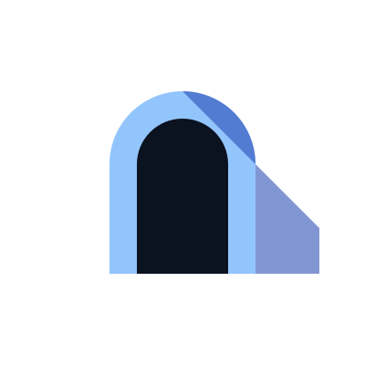

⌘↵ to save
This page can't be captured. Notes still work.

Total RecallTotal Recall runs on your machine. Point the extension at it and add an access token.
Create a token in the dashboard under Integrations.
This page can't be captured. Notes still work.
Answers draw on your memories and, when enabled, the page you're on.